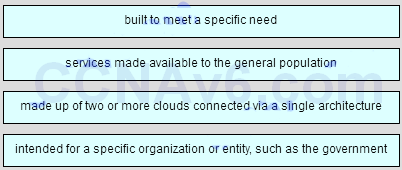
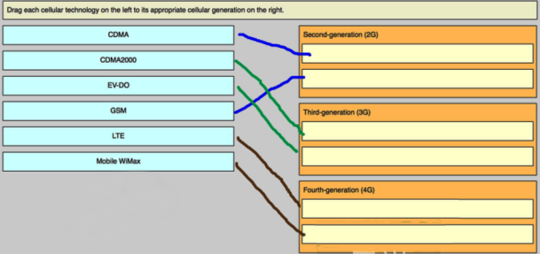

1.Un usuario nota que la velocidad de transferencia de datos para la NIC gigabit en la computadora del usuario es mucho más lenta de lo esperado. ¿Cuál es la posible causa del problema?
- La configuración de dúplex de NIC se ha establecido de alguna manera en dúplex medio. *
- La configuración de activación de LAN de NIC está mal configurada.
- El modo de hibernación hace que la NIC se cierre inesperadamente.
- La NIC está configurada para usar tanto IPv4 como IPv6 al mismo tiempo.
2.Dos LEDs suelen estar presentes en una NIC. ¿Cuáles son los dos usos principales de estos LED? (Escoge dos.)
- para indicar la presencia de una conexión *
- para indicar la interferencia de otro dispositivo inalámbrico o electrónico cercano
- para indicar que la NIC se ha conectado a un servidor DHCP
- para indicar que la NIC está conectada a un grupo en el hogar o grupo de trabajo
- para indicar que la actividad de transferencia de datos está presente *
3.¿Cuál es el propósito de los perfiles de red que se utilizan para establecer una nueva conexión de red en una PC con Windows?
- para configurar los ajustes de NIC para la red más rápida disponible
- para eliminar la necesidad de direcciones IP al conectarse a una red
- para proporcionar una lista de los ISP que se pueden usar para el acceso a Internet
- para proporcionar una manera fácil de configurar o aplicar funciones de red basadas en el tipo de red a unirse *
4.Un enrutador inalámbrico muestra la dirección IP de 192.168.0.1. ¿Qué podría significar esto?
- La función NAT no está funcionando en el enrutador inalámbrico.
- El enrutador inalámbrico todavía tiene la dirección IP predeterminada de fábrica. *
- La asignación dinámica de direcciones IP se ha configurado en el enrutador y está funcionando correctamente.
- El enrutador inalámbrico se ha configurado para utilizar las frecuencias en el canal 1.
5.Un técnico está configurando el canal en un enrutador inalámbrico a 1, 6 u 11. ¿Cuál es el propósito de ajustar el canal?
- Deshabilitar la transmisión del SSID.
- para habilitar diferentes estándares 802.11
- para proporcionar modos de seguridad más fuertes
- para evitar interferencias de dispositivos inalámbricos cercanos *
6.¿Qué combinación de cuenta de usuario y perfil de ubicación de red permite a un usuario convertirse en miembro de un grupo en el hogar?
- una cuenta de administrador con un perfil de ubicación de red de Trabajo
- una cuenta de invitado con un perfil de ubicación de red de Inicio
- una cuenta de usuario administrador con una ubicación de red de Public
- una cuenta de usuario estándar con un perfil de ubicación de red de Inicio *
7.Un viajero de negocios se conecta a una red inalámbrica con autenticación abierta. ¿Qué debe hacer el viajero para proteger los datos confidenciales al conectarse a los servicios comerciales?
- Conéctate con una VPN. *
- Cambie el perfil de ubicación de red a público.
- Cambiar la configuración del firewall de Windows.
- Configure manualmente una dirección IP, una máscara de subred y una puerta de enlace predeterminada.
8.Se le ha pedido a un técnico que configure una conexión de banda ancha para un teletrabajador. Se le ha indicado al técnico que todas las cargas y descargas para la conexión deben usar las líneas telefónicas existentes. ¿Qué tecnología de banda ancha se debe utilizar?
- cable
- DSL *
- RDSI
- MONTONES
9.¿Qué tipo de conexión a Internet es capaz de las tasas de transferencia más rápidas?
- RDSI
- MONTONES
- satélite
- cable
- fibra *
10.¿Qué tecnología se recomendaría para una empresa que requiere que los trabajadores accedan a Internet mientras visitan a los clientes en muchos lugares diferentes?
- ADSL
- celular *
- RDSI
- VPN
11.Una pequeña empresa está considerando mover muchas de las funciones de su centro de datos a la nube. ¿Cuáles son las tres ventajas de este plan? (Elige tres.)
- La empresa solo necesita pagar por la cantidad de capacidad de procesamiento y almacenamiento que utiliza. *
- Los servicios en la nube se facturan a una tarifa fija sin importar cuánto procesamiento y almacenamiento utilice la empresa.
- Los servicios en la nube permiten a la empresa poseer y administrar sus propios servidores y dispositivos de almacenamiento.
- La compañía puede aumentar la capacidad de procesamiento y almacenamiento según sea necesario y luego disminuir la capacidad cuando ya no se necesita. *
- A medida que aumenta la cantidad de datos que utiliza la empresa, se vuelve poco práctico que los datos se almacenen y procesen en un centro de datos de un solo inquilino. *
12.¿Qué servicio de computación en la nube sería mejor para una organización que no tiene el conocimiento técnico para hospedar y mantener aplicaciones en su sitio local?
- SaaS *
- laaS
- Paas
- ITaas
13.Un cliente de red en un entorno corporativo se reinicia. ¿Qué tipo de servidor probablemente se usaría primero?
- DNS
- DHCP *
- correo eletrónico
- FTP
- Telnet
14.¿Qué es una función común de un servidor proxy?
- para almacenar páginas web de acceso frecuente en la red interna *
- para controlar quién tiene permiso para acceder a la red interna
- para detectar firmas maliciosas mediante el monitoreo del tráfico que ingresa a la red interna
- para proporcionar acceso a un conjunto compartido de recursos informáticos configurables
15.La compañía ABC requiere mantenimiento preventivo para todos los cables de la red local una vez al año. ¿Qué tarea debe incluirse en el programa de mantenimiento preventivo?
- Desconecte y vuelva a conectar todos los cables de conexión.
- Inspeccione todos los cables de conexión para detectar roturas. *
- Reemplace todas las etiquetas en los cables.
- Reemplace todos los soportes de cable para evitar puntos de unión sueltos.
16.¿Cuál es el beneficio de realizar un mantenimiento preventivo a intervalos regulares?
- reducción del tiempo de inactividad de la red *
- reducción de la conectividad
- reducción de amenazas de seguridad
- Reducción de EMI y RFI.
17.Un usuario no puede acceder a la red. Mientras el técnico está revisando la computadora, los otros usuarios en la misma red informan que tienen el mismo problema. Investigaciones posteriores muestran que las luces LED de cada NIC no están encendidas. ¿Qué debe hacer el técnico a continuación?
- Verifique cada computadora para verificar que todas tengan la misma configuración.
- Reporte el problema al administrador de la red. *
- Intente hacer ping a dispositivos en otras redes.
- Use nslookup para verificar la conectividad de la red.
18.Un usuario puede imprimir en una impresora que está en la misma red, pero el tráfico del usuario no puede llegar a Internet. ¿Cuál es una posible causa del problema?
- Falta la dirección de la puerta de enlace predeterminada de la PC o es incorrecta. *
- La PC tiene una dirección IP incorrecta.
- El cable de red conectado a la PC del usuario está defectuoso.
- El NIC en la PC es defectuoso.
19.Un técnico está investigando un informe que indica que una computadora no puede acceder a los recursos de la red. El técnico descubre que la computadora tiene una dirección IP de 169.254.27.168. ¿Cuál es un primer paso lógico para diagnosticar este problema?
- Intenta hacer ping a la puerta de enlace predeterminada.
- Verifique las luces LED de la NIC. *
- Probar que el DNS está funcionando correctamente.
- Activar el descubrimiento de red y compartir archivos.
20.Una computadora con Windows 7 no puede alcanzar una unidad asignada en un servidor de archivos que está en otra red dentro de la organización. Una investigación adicional muestra que el usuario puede usar una impresora que está conectada a la misma red que la computadora. ¿Qué acción debe realizar el técnico a continuación?
- Verifique que la resolución de nombres DNS esté funcionando correctamente.
- Verifique los detalles de la conexión de red en la GUI de Windows para obtener la conexión de red adecuada. *
- Compruebe el LED de enlace en la NIC.
- Inspeccione el cable de conexión de red en busca de desgaste o roturas.
21.Un usuario ha tomado una computadora portátil personal para trabajar. La computadora portátil no puede descubrir el nombre de la red inalámbrica de la oficina. ¿Cuáles son las dos causas potenciales de este problema? (Escoge dos.)
- El enrutador inalámbrico no está transmitiendo el SSID. *
- La computadora portátil no ha recibido una dirección IP del enrutador inalámbrico.
- El enrutador inalámbrico está configurado en modo mixto.
- La red no es compatible con el protocolo inalámbrico en uso por la computadora portátil. *
22.Un técnico de red intenta hacer ping en www.example.net desde la computadora de un cliente, pero el ping falla. El acceso a las unidades de red asignadas y una impresora compartida funcionan correctamente. ¿Cuáles son las dos posibles causas de este problema? (Escoge dos.)
- El nombre de dominio o grupo de trabajo de Windows que está configurado en la computadora es incorrecto.
- El servidor web de destino está inactivo. *
- A la computadora se le ha asignado una dirección IP estática.
- El servicio DNS no está disponible en la red del cliente. *
- El protocolo HTTP no funciona correctamente en el servidor de destino.
23.Un técnico utiliza el comando nbtstat -A 192.168.0.3. ¿Qué espera ver el técnico en la salida del comando?
- Conexiones actuales y estadísticas *
- información de configuración del adaptador de red
- una lista de enrutadores dentro de la ruta de tráfico
- Cuentas de computadora e información específica del dominio.
24.Rellene el espacio en blanco. ¿Cuál es el acrónimo del protocolo que se usa cuando se comunica de forma segura con un servidor web?
- HTTPS *
25.Coincidir con la definición de la nube.
- pregunta
- Respuestas 
.png)
26.¿Cuál es una buena fuente para descargar con seguridad aplicaciones de Android?
- la tienda de aplicaciones de Apple
- iTunes
- sitios gratuitos
- Google play*
27.¿Qué dos funciones se pueden realizar con el botón de inicio en un dispositivo móvil con iOS? (Escoge dos.)
- bloquear el dispositivo
- Las mismas funciones que los botones de navegación de Android *
- iniciar el control de voz *
- restablecer el dispositivo a los valores predeterminados de fábrica
- iniciar la interfaz TouchFLO
28.¿Cuáles son dos beneficios potenciales para el usuario de rootear o jailbreak a un dispositivo móvil? (Escoge dos.)
- Un sistema operativo personalizado puede reducir las funciones de sandboxing.
- El sistema operativo se puede ajustar para mejorar la velocidad del dispositivo. *
- El funcionamiento de la red celular portadora puede verse afectado.
- La interfaz de usuario se puede personalizar ampliamente. *
29.¿Cuáles son dos propósitos de la función de bloqueo de contraseña en dispositivos móviles? (Escoge dos.)
- para borrar todos los datos personales del dispositivo
- para bloquear remotamente el dispositivo si es robado
- para colocar el dispositivo en un estado de ahorro de energía *
- Para ayudar a prevenir el robo de información privada *
- para restaurar y volver a sincronizar el dispositivo
30.¿Cuáles son dos propósitos de la función de bloqueo de contraseña en dispositivos móviles? (Escoge dos.)
- para devolver el dispositivo al estado predeterminado de fábrica
- para evitar el uso no autorizado del dispositivo. *
- para bloquear remotamente el dispositivo si es robado
- Para ayudar a prevenir el robo de información privada *
- para restaurar y volver a sincronizar el dispositivo
31.¿Cuál es una ventaja de usar memoria flash para almacenar datos en dispositivos móviles?
- La memoria flash tiene un cabezal de unidad que se mueve, lo que reduce el tiempo de búsqueda para localizar datos.
- La memoria flash requiere muy poca energía para almacenar y recuperar datos. *
- La memoria flash no se ve afectada por ESD.
- La memoria flash es altamente resistente al agua y al frío.
32.¿Cuáles son las dos características de la pantalla táctil que utilizan la mayoría de los dispositivos móviles? (Escoge dos.)
- un campo eléctrico de la pantalla que se interrumpe cuando el usuario toca la pantalla *
- Tres capas responsables de conducir la electricidad con un pequeño espacio de aire entre ellos
- Una pantalla de vidrio recubierta con un capacitor.
- Dos capas transparentes de material capaces de conducir la electricidad *
- Dos capas coloreadas de material capaz de conducir electricidad.
33.¿Qué componente es reemplazable en el campo en la mayoría de los dispositivos móviles?
- tarjeta de memoria*
- RAM
- pantalla táctil
- UPC
34.¿Qué procedimiento de solución de problemas del dispositivo móvil es correcto?
- Cuando aparece un problema con un dispositivo móvil, el propietario debe analizar si es rentable solucionarlo. *
- Los dispositivos móviles cambian tan rápidamente en diseño y funcionalidad que siempre es mejor reemplazar el dispositivo en lugar de repararlo.
- Los problemas del dispositivo móvil siempre resultan en el envío del dispositivo al fabricante para la solución de problemas.
- Cada vez que un dispositivo móvil se congela, el propietario puede reinicializarlo presionando el botón de reinicio.
35.Un usuario accidentalmente deja caer un dispositivo móvil en una piscina. ¿Qué acción correctiva se debe tomar?
- Póngase en contacto con el fabricante para su reparación o sustitución. *
- Use un secador de pelo para secar el teléfono.
- Abra el dispositivo y reemplace los componentes dañados.
- Si el dispositivo móvil no se enciende, deséchelo y compre uno nuevo.
36.Después de permanecer en un automóvil durante muchas horas en un día caluroso, no se puede encender un iPhone. ¿Qué debe hacer el usuario para solucionar este problema?
- Compra un nuevo botón de encendido y reemplázalo.
- Desmonte el teléfono y busque daños relacionados con el calor.
- Devuelva el teléfono al fabricante para su reparación. *
- Coloque el teléfono en un espacio refrigerado y deje que la unidad se enfríe.
37. Después de una actualización a un dispositivo móvil, algunas aplicaciones ya no funcionan, pero algunas funcionan bien. El usuario puede hacer llamadas y enviar y recibir correos electrónicos. ¿Qué dos tipos de problemas podrían estar relacionados con estos problemas? (Escoge dos.)
- un problema de software *
- un problema de pantalla táctil
- un problema de servicio celular
- un problema de la placa de circuito
- un problema de memoria *
38.¿Qué escenario o situación impediría a un usuario actualizar el sistema operativo en un dispositivo Android?
- El copyright del software no se obtuvo antes de la instalación.
- Los parches correctos no fueron instalados.
- El hardware no cumple con las especificaciones. *
- No se obtuvo permiso del fabricante.
39.¿Qué dos condiciones deben cumplirse para que las medidas de seguridad de los dispositivos móviles, como el bloqueo remoto y el borrado remoto, funcionen? (Escoge dos.)
- El localizador GPS debe estar habilitado.
- El sandboxing debe estar habilitado.
- El dispositivo debe estar encendido. *
- El dispositivo debe estar conectado a una red. *
40.¿Qué dos elementos comunes tanto para dispositivos Android como iOS pueden ser respaldados de forma remota? (Escoge dos.)
- fotos
- ajustes
- contactos *
- calendario *
- mensajes
41.¿Qué afirmación es cierta acerca de la conectividad inalámbrica en un dispositivo móvil Android?
- Si el SSID de la red no se está transmitiendo, el dispositivo no podrá conectarse a la red.
- Cuando el dispositivo se encuentra fuera del alcance de cualquier red Wi-Fi, puede conectarse a la red de datos móviles si esta función está habilitada. *
- El sistema operativo Android no es compatible con la conectividad inalámbrica que utiliza la seguridad WPA2.
- Si una red Wi-Fi está protegida con una contraseña, la red debe configurarse manualmente en el dispositivo.
42.Este es un elemento flash. Por favor, haga clic abajo para responder a este artículo.
-

43.En el contexto de los dispositivos móviles, ¿en qué consiste el término tethering?
- conectar un dispositivo móvil a un puerto USB en una computadora para cargar el dispositivo móvil
- conectar un dispositivo móvil a un auricular de manos libres
- conectar un dispositivo móvil a otro dispositivo móvil o computadora para compartir una conexión de red *
- conectando un dispositivo móvil a una red celular 4G
44.¿Qué afirmación es cierta acerca de los estándares de la industria para redes celulares?
- Los estándares celulares de primera generación son en su mayoría estándares digitales.
- Los estándares celulares de tercera generación requieren un máximo de 1 Gb / s para dispositivos que se mueven lentamente, como cuando un usuario tiene un dispositivo móvil y está caminando.
- Los estándares celulares han hecho que sea más difícil y costoso hacer llamadas a personas que están en una red diferente.
- Los teléfonos celulares que usan un solo estándar a menudo solo se pueden usar en áreas geográficas específicas. *
45.¿Qué afirmación sobre la sincronización de un dispositivo móvil con una PC es cierta?
- Para sincronizar los datos en un dispositivo iOS, iTunes debe estar instalado en la PC. *
- Motocast USB se puede usar para sincronizar datos cuando se usa un dispositivo iOS.
- La sincronización de iOS solo se puede realizar a través de una conexión USB.
- Los datos de los dispositivos Android no se pueden sincronizar con una PC.
46.Un técnico está configurando el correo electrónico en un dispositivo móvil. El usuario desea poder mantener el correo electrónico original en el servidor, organizarlo en carpetas y sincronizar las carpetas entre el dispositivo móvil y el servidor. ¿Qué protocolo de correo electrónico debe usar el técnico?
- MÍMICA
- POP3
- SMTP
- IMAP *
47.¿Qué función de seguridad del dispositivo móvil requiere que el usuario deslice un dedo sobre la pantalla en una secuencia específica para desbloquear el dispositivo?
- código de acceso simple
- modelo *
- Borrado remoto
- diapositiva
48.¿Qué término describe la capacidad de un dispositivo móvil para reconocer cuándo se hacen dos o más puntos de contacto en la pantalla?
- gran toque
- muchos toques
- multitáctil *
- toque largo
- toque corto